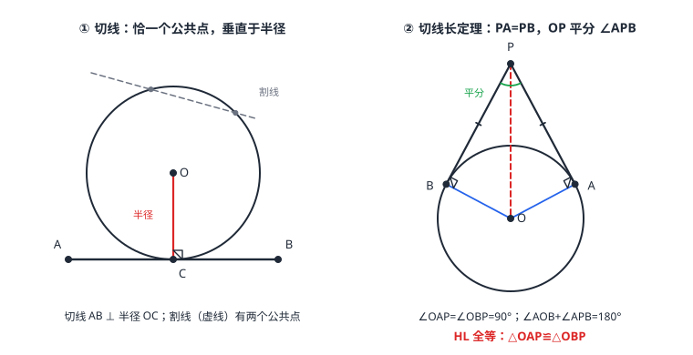

切线的判定与切线长定理
切线是与圆「恰好接触」的直线：判定看两条——过半径外端且垂直于这条半径（有公共点时用），或圆心到直线的距离等于半径（无公共点时用）；性质只有一句但极硬：切线垂直于过切点的半径。从圆外一点能引两条切线，切线长相等、圆心与该点连线平分夹角（切线长定理，HL 全等三行证完）。三角形内切圆的圆心是三条角平分线的交点（内心），直角三角形内切圆半径 r=\tfraca+b-c2。
| 所属主题 | 圆 |
|---|---|
| 所属模块 | 几何 |
| 课标学段 | 第四学段（7~9 年级） |
| 前置知识 | 点、直线与圆的位置关系、全等三角形、角与角平分线 |
| 核心素养 | 推理能力几何直观运算能力 |
教材定位
人民教育出版社《人教版（2024版）义务教育教科书·数学》
九年级上册第30章 直线与圆的位置关系30.1 直线与圆30.2 三角形的内切圆
对应九上 30.1.2 圆的切线（判定、性质与切线长定理）与 30.2 三角形的内切圆。
说明
切线判定定理：经过半径的外端，并且垂直于这条半径的直线是圆的切线（切点即半径外端）。没有现成公共点时，用位置关系（点、直线与圆的位置关系）：圆心到直线的距离 d=R \Rightarrow 相切——「证垂直」与「算距离」是两条等价入口。
切线性质定理：圆的切线垂直于过切点的半径。证垂直时它是现成武器；反过来，半径一到位，切线位置立刻锁死。
切线长与切线长定理：切线长是从圆外一点引切线时，这点与切点之间的线段长。定理：从圆外一点引圆的两条切线，它们的切线长相等；圆心和这一点的连线平分两条切线的夹角（图 1 右）。配套事实：四边形 OAPB 中 \angle OAP=\angle OBP=90^\circ，故 \angle AOB+\angle APB=180^\circ。
三角形的内切圆：与三角形三边都相切的圆，圆心是三条角平分线的交点（内心）——角平分线上的点到两边距离相等（角与角平分线），恰好是「到三边等距」的圆心。直角三角形内切圆半径有公式 r=\tfraca+b-c2（两直角边 a、b，斜边 c）。
使用场景
砂轮与挡板：砂轮是圆、挡板是直线，挡板贴着砂轮边缘恰一点接触——设计上要求挡板与轮半径垂直，正是切线性质的工业版。
帐篷拉绳与圆形地桩：从帐篷顶向圆形地桩圆引两根绷直的绳，绳长相等、对称张开——切线长定理给「两绳等长」一个免测量的保证。
注意点
判定定理的两个条件缺一不可：直线必须「经过半径外端」且「垂直于这条半径」。过圆内一点作垂直不行（根本到不了圆边），过外端不垂直也不行（会割进圆里两个交点）。
「切线」是直线，「切线长」是线段长度——别把「切线相等」说出口，直线没有长度；要说「切线长相等」。
内切圆与外接圆（点、直线与圆的位置关系）成对易混：内切圆切三边、圆心是角平分线交点；外接圆过三顶点、圆心是垂直平分线交点。名字里的「内」「外」指圆相对三角形的位置。
见切点不连半径是高频失误：切线题目第一动作永远是连半径，直角与半径一到位，勾股与全等才有落点。
证明

图 1：左——切线性质：切线 AB 垂直于过切点 C 的半径 OC（对照：普通相交直线无垂直保证）；右——切线长定理：PA=PB，OP 平分 ∠APB，且 ∠OAP=∠OBP=90°，四边形 OAPB 中 ∠AOB 与 ∠APB 互补
证明
结论 1切线的性质定理：圆的切线垂直于经过切点的半径。
设 AB 切 \odot O 于 C，连 OC。反证：若 OC 不垂直于 AB，则圆心到直线的距离 d<OC=R（垂线段最短，相交线与平行线），于是直线与圆相交、有两个公共点，与「相切（唯一公共点）」矛盾。故 OC\perp AB。
关键一步依据是垂线段最短（相交线与平行线）加上「相切只有一个公共点」：若 OC 不垂直于 AB，则圆心到直线的垂线段比 OC 还短，即 d<OC=R，按 点、直线与圆的位置关系 的判定（d<R 时相交）直线与圆有两个公共点，与相切矛盾。所以 OC\perp AB。
结论 2切线的判定定理：过半径外端且垂直于该半径的直线与圆相切。
设直线 l 过半径 OC 的外端 C 且 l\perp OC。在 l 上任取异于 C 的点 P，连 OP：OP>OC=R（斜线大于垂线段），即 l 上除 C 外的点全在圆外——公共点只有 C 一个，l 是切线。
关键一步依据是直角三角形中斜边大于直角边：l\perp OC 且 P 在 l 上，\triangle OCP 是直角三角形，斜边 OP 必大于直角边 OC=R，所以 l 上除 C 外的点全在圆外；而 C 本身在圆上，公共点唯一，故 l 与圆相切。
结论 3切线长定理：从圆外一点引圆的两条切线，切线长相等，且连线 OP 平分这两条切线所夹的角；\angle AOB+\angle APB=180^\circ。
PA、PB 切 \odot O 于 A、B，连 OA、OB、OP。由性质定理 \angle OAP=\angle OBP=90^\circ；OA=OB（半径），OP 公共——直角三角形全等（HL，全等三角形）：\triangle OAP\cong\triangle OBP。所以 PA=PB（切线长相等）、\angle OPA=\angle OPB（OP 平分 \angle APB）。四边形 OAPB 内角和 360^\circ，减去两个 90^\circ 得 \angle AOB+\angle APB=180^\circ。
关键一步依据是直角三角形全等的 HL 判定（全等三角形）：\triangle OAP 与 \triangle OBP 都是直角三角形，斜边 OP 是公共边，直角边 OA=OB 都是半径，两条斜边与一条直角边分别相等，故两三角形全等，于是对应边 PA=PB、对应角 \angle OPA=\angle OPB。而 \angle AOB+\angle APB=180^\circ 来自四边形 OAPB 内角和 360^\circ 减去两个直角 \angle OAP、\angle OBP。
结论 4直角三角形的内切圆半径 r=ab/a+b+c=a+b-c/2，其中 a、b 是两条直角边，c 是斜边。
设两直角边 a、b、斜边 c，内心到三边的距离都是 r。面积法：S=\tfrac12 ab，又 S=\tfrac12 ar+\tfrac12 br+\tfrac12 cr=\tfrac12(a+b+c)r，故 r=ab/a+b+c=\tfraca+b-c2（最后一步用 c^2=a^2+b^2 恒等变形：ab/a+b+c=ab(a+b-c)/(a+b)^2-c^2=ab(a+b-c)/2ab）。
关键一步依据是面积法的两种算法必须相等：直角三角形按整体算得 S=\tfrac12 ab，按内心分成的三个小三角形算得 S=\tfrac12 ar+\tfrac12 br+\tfrac12 cr=\tfrac12(a+b+c)r（内心到三边的距离都是 r，所以三个高都等于 r），两式相等即得 r=ab/a+b+c。最后一步是代数恒等变形：由 c^2=a^2+b^2 得 (a+b)^2-c^2=2ab，所以 ab/a+b+c=ab(a+b-c)/(a+b)^2-c^2=ab(a+b-c)/2ab=a+b-c/2。
动手实验
把直尺轻靠在圆形硬币边缘滑动：无论转到哪个角度，尺与币恰好接触一点，且从硬币圆心看接触点的半径与尺边垂直。再用一根细绳：绳一端固定在圆外一点 P，另一端绕到圆上绷直（相切），记下切点换另一侧再绷一次——两次绳长相等，两条绳关于 PO 对称。
解题思路
辅助线口诀「见切点，连半径」：判定或计算中先把切点与圆心连起来，得到直角三角形，半径、切线长、圆心到外点距离全进勾股体系。
判定切线选路线：图形给出公共点（已知直线过圆上一点）→ 连半径，证 l\perp 半径；未给公共点 → 作垂线（圆心到直线），证 d=R。
切线长计算三件套：OA\perp PA、OP 平分 \angle APB、\angle AOB=180^\circ-\angle APB——在 Rt\triangle OAP 里用勾股或 30^\circ 特角一次算清（例 3）。
内切圆半径：一般三角形用面积法 r=2S/a+b+c（S 为三角形面积）；直角三角形直接套 r=\tfraca+b-c2（例 2 验证两种算法一致性）。
按场景的例题
例 1（场景：测量与工程） 砂轮挡板安装校核
砂轮以 O 为圆心，挡板边 AB 与砂轮相切于 A。安装图上量得 \angle ABO=30^\circ，\angle A 处半径与挡板垂直。求圆心角 \angle AOB，并问弧 AB（劣弧）占整圆的几分之几。
解：相切于 A：OA\perp AB，\angle OAB=90^\circ。\triangle OAB 中 \angle AOB=180^\circ-90^\circ-30^\circ=60^\circ。弧 AB 的度数等于圆心角 60^\circ（圆心角、弧与圆周角定理），占整圆 \tfrac60360=\tfrac16。
答：\angle AOB=60^\circ，弧 AB 占整圆的六分之一。
例 2（场景：图形设计） 三角形垫片内嵌圆孔
直角三角形垫片两直角边 3 厘米、4 厘米，斜边 5 厘米，要在内部嵌一个与三边都相切的圆孔。分别用公式 r=\tfraca+b-c2 与面积法求孔的半径，核对是否一致。
解：公式法：r=\tfrac3+4-52=1（厘米）。面积法：S=\tfrac12× 3× 4=6，周长 =12，r=2S/a+b+c=12/12=1（厘米）。两法一致。
答：内切圆孔半径 r=1 厘米。
例 3（场景：生活优化） 帐篷拉绳下料
帐篷顶点 P 到圆形地桩圆（圆心 O，半径 3 米）引两根拉绳 PA、PB，分别与圆相切，\angle APB=60^\circ。求每根拉绳的长度与 \angle AOB。
解：OP 平分 \angle APB：\angle OPA=30^\circ；OA\perp PA，在 Rt\triangle OAP 中 \angle OAP=90^\circ。30^\circ 角对边 OA=3，斜边 OP=2× 3=6，勾股得 PA=\sqrt6^2-3^2=\sqrt27=3\sqrt3\approx 5.2（米）。\angle AOB=180^\circ-60^\circ=120^\circ（四边形 OAPB 对角互补）。
答：拉绳长 PA=PB=3\sqrt3\approx 5.2 米，\angle AOB=120^\circ。
常用推论
切点弦（连接两切点 A、B 的弦）：OP 垂直平分 AB——由 \triangle OAP\cong\triangle OBP，A、B 关于直线 OP 对称。求切点弦长又回到垂径定理（圆的概念与垂径定理）的直角三角形。
\angle AOB=2\angle APB 的「二倍关系」：由互补 \angle AOB+\angle APB=180^\circ 直接变形而来，与圆心角—圆周角的一半关系形似而来源不同，别混用。
内心到三边等距，因此内切圆半径 r 就是三角形任意一边上的「高矮尺」：S=\tfrac12 × 周长 × r，任何三角形的面积都能这样三行算完。
易错点
错经过半径外端的直线就是切线。
为什么错少了「垂直于这条半径」：过外端的斜直线会割进圆内，与圆交于两点，是割线不是切线。
正确经过半径外端且垂直于这条半径的直线才是切线。
错从圆外一点引两条切线，两条切线相等。
为什么错切线是直线，无长度可言；相等的是切线长——外点到切点之间的线段。
正确从圆外一点引圆的两条切线，切线长相等。
错直角三角形内切圆半径 r=\tfraca+b+c2。
为什么错分子应是两条直角边之和减斜边；把周长放进去会算出偏大一倍以上的值。
正确r=\tfraca+b-c2（a、b 为直角边，c 为斜边）。
直观理解
切线像靠在圆上的直尺：碰一下就停，绝不深入；接触点处半径天然垂直——因为圆心到直线「最近的那条路」必须恰好走完半径。从圆外看，两条切线是从同一点甩出的两根绷直的绳，圆被对称地夹在中间，OP 是天然的对称轴：绳等长、角对分、切点互为镜像。三角形的三条角平分线在这个舞台上相遇——「到三边等距」的点当圆心，内切圆由此而生。